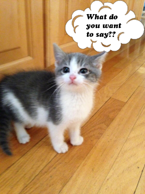

Just Fifteen
Blog
A regularly updated website or web page, typically one run by an individual or small group, that is written in an informal or conversational style.
Micro-Blogging

What Do you want to say???
Platforms
- Word count : 140
- Weibo : Microblogging in China
- Word count : 140
- Plurk
- Word count : 210
Just Fifteen
Micro Learning platform
Just Fifteen Learning Model
Engage
Make connections between past and present learning experience
Mail a Story
Hub
- Create a Hub badge
Problems we may bump into
- Wide range of topics
- Sort based on users`s interests and need.
- Target Audiences
Explore
Identify and develop concepts, processes, and skills.
Problems we may bump into
- Obstacles while exploration
- Active team
Evaluate
Element of surprise
Call to action
- What’s one thing you will commit to practicing after this session?
Problems we may bump into
- Do we like exams???
- Handouts
- Just Fifteen learning mails or L-Mail.
Extend
Generic model
- Teams
- Divisons
- BUs
Impact
- Coding culture.
- Insights into latest technologies.
- Fruitful to Individual and TR
Stake
- Time
- Speaker Form
- Priotize
- Review
Feasibility